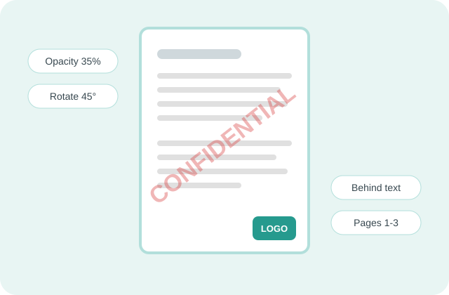

Stamp custom text or your logo on every page or chosen pages, with a live preview of the exact result.
Free · No sign-up · No upload · No extra logo added

To add a watermark to a PDF online free, open PDFdukan's watermark tool, type your text or choose a logo, pick a position, angle and opacity, then tap Add watermark. The file is stamped in your browser, and no extra logo is added.
A live preview shows the exact page you'll download, so you can check the mark before saving. PDFdukan keeps your last settings, so the next file takes one click.
Five steps, on a phone or a computer:
Each option shows in the preview first:
Urdu and Arabic marks come out as real letters, not boxes or errors.
Use PNG, JPG, WebP, SVG or GIF; transparent PNG logos blend best.
Put the mark under the text so every word stays readable.
Choose all, first, odd, even or a range like 1-3, 7.
Landscape and rotated pages get the mark the right way up.
The same watermark goes on up to 20 PDFs in one run.
PDFdukan sets these limits for each session:
| Item | Details |
|---|---|
| PDF input | Up to 200 MB each, 20 files per batch |
| Image watermark | PNG, JPG, WebP, SVG, GIF |
| Rotation | Any angle from −180° to 180° |
| Opacity | 5% to 100% |
| Output | PDF, or one ZIP for several files |
| Cost | Free, no sign-up, no added branding |
Keep text marks between 20% and 35% opacity at 45°, so they read from across a desk but never hide a number. For proofs, tile a smaller mark with wide spacing. Put logos behind the content, because a mark on top of a signature line can make a contract hard to read.
No. PDFdukan reads pages with Mozilla's pdf.js and writes the watermark with pdf-lib, both inside your browser tab. Your PDFs and logo never reach our server.
A watermark is added as page content, not locked in, so someone with a full PDF editor could remove it. Marks placed behind the content can disappear under scanned pages with a solid background. PDFs locked against changes need Unlock PDF first.
Yes. PDFdukan adds text or image watermarks free, with no sign-up, no page cap and no extra logo on your pages.
Leave Pages set to All pages. The mark goes on each page in the same spot, including landscape pages.
Yes. Switch to Image, tap Choose image and pick your logo. Set its width as a share of the page, from 5% to 100%.
Lower the Opacity slider. Around 25% keeps text below the mark easy to read.
Yes. Under Pages, pick first page, odd, even or Custom range, then type pages like 2-5, 9.
No. The original pages are kept as they are; the mark is added on top or underneath.
Yes. Add up to 20 PDFs, tap Add watermark, then use Download all (ZIP).
Connect Google Drive to save selected outputs to your own Drive storage. Review the destination before uploading sensitive documents.
No account? Sign Up free